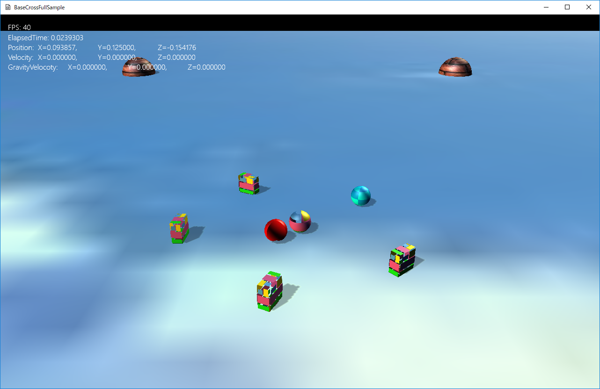

図1204a
F = M × A
//--------------------------------------------------------------------------------------
// 配置されるオブジェクトの親
//--------------------------------------------------------------------------------------
class BaseChara : public GameObject {
//ステートマシーン
unique_ptr< StateMachine<BaseChara> > m_StateMachine;
Vec3 m_StartPos;
float m_StateChangeSize;
//フォース
Vec3 m_Force;
//速度
Vec3 m_Velocity;
void ApplyForce();
protected:
//構築と破棄
BaseChara(const shared_ptr<Stage>& StagePtr, const Vec3& StartPos);
virtual ~BaseChara();
public:
//アクセサ
const unique_ptr<StateMachine<BaseChara>>& GetStateMachine() {
return m_StateMachine;
}
Vec3 GetStartPos() const {
return m_StartPos;
}
float GetStateChangeSize() const {
return m_StateChangeSize;
}
const Vec3& GetForce()const {
return m_Force;
}
void SetForce(const Vec3& f) {
m_Force = f;
}
void AddForce(const Vec3& f) {
m_Force += f;
}
const Vec3& GetVelocity()const {
return m_Velocity;
}
void SetVelocity(const Vec3& v) {
m_Velocity = v;
}
shared_ptr<GameObject> GetTarget()const;
virtual void NearBehavior() = 0;
virtual void FarBehavior() = 0;
virtual void OnCreate() override;
virtual void OnUpdate() override;
};
void BaseChara::OnCreate() {
//オブジェクトのグループを得る
auto Group = GetStage()->GetSharedObjectGroup(L"ObjGroup");
//グループに自分自身を追加
Group->IntoGroup(GetThis<BaseChara>());
//分離行動をつける
auto PtrSep = GetBehavior<SeparationSteering>();
PtrSep->SetGameObjectGroup(Group);
//壁回避行動を付ける
auto PtrWall = GetBehavior<WallAvoidanceSteering>();
vector<PLANE> PlaneVec = {
{
Vec3(20,0,0),
Vec3(20,1.0,0),
Vec3(20,0,-1.0),
},
{
Vec3(0,0,-20),
Vec3(0,1.0,-20),
Vec3(-1.0,0,-20),
},
{
Vec3(-20,0,0),
Vec3(-20,1.0,0),
Vec3(-20,0,1.0),
},
{
Vec3(0,0,20),
Vec3(0,1.0,20),
Vec3(1.0,0,20),
},
};
PtrWall->SetPlaneVec(PlaneVec);
//障害物回避行動を付ける
vector<shared_ptr<GameObject>> SpObjVec;
GetStage()->GetUsedTagObjectVec(L"FixedSphere", SpObjVec);
vector<SPHERE> SpVec;
for (auto& v : SpObjVec) {
auto TransPtr = v->GetComponent<Transform>();
SPHERE sp;
sp.m_Center = TransPtr->GetPosition();
sp.m_Radius = TransPtr->GetScale().x * 0.5f;
SpVec.push_back(sp);
}
auto PtrAvoidance = GetBehavior<ObstacleAvoidanceSteering>();
PtrAvoidance->SetObstacleSphereVec(SpVec);
//ステートマシンの構築
m_StateMachine.reset(new StateMachine<BaseChara>(GetThis<BaseChara>()));
//最初のステートをSeekFarStateに設定
m_StateMachine->ChangeState(FarState::Instance());
}
１、SeparationSteering（分離行動） ２、WallAvoidanceSteering（壁回避行動） ３、ObstacleAvoidanceSteering（障害物回避行動）
void BaseChara::OnUpdate() {
m_Force = Vec3(0);
//共通のステアリング1
auto PtrWall = GetBehavior<WallAvoidanceSteering>();
m_Force += PtrWall->Execute(m_Force, GetVelocity());
//ステートマシンのUpdateを行う
//この中でステートの切り替えが行われる
m_StateMachine->Update();
//共通のステアリング2
auto PtrSep = GetBehavior<SeparationSteering>();
m_Force += PtrSep->Execute(m_Force);
auto PtrAvoidance = GetBehavior<ObstacleAvoidanceSteering>();
m_Force += PtrAvoidance->Execute(m_Force, GetVelocity());
ApplyForce();
auto PtrUtil = GetBehavior<UtilBehavior>();
PtrUtil->RotToHead(1.0f);
}
shared_ptr<FarState> FarState::Instance() {
static shared_ptr<FarState> instance(new FarState);
return instance;
}
void FarState::Enter(const shared_ptr<BaseChara>& Obj) {
}
void FarState::Execute(const shared_ptr<BaseChara>& Obj) {
Obj->FarBehavior();
}
void FarState::Exit(const shared_ptr<BaseChara>& Obj) {
}
//--------------------------------------------------------------------------------------
// プレイヤーから近いときの移動
//--------------------------------------------------------------------------------------
shared_ptr<NearState> NearState::Instance() {
static shared_ptr<NearState> instance(new NearState);
return instance;
}
void NearState::Enter(const shared_ptr<BaseChara>& Obj) {
}
void NearState::Execute(const shared_ptr<BaseChara>& Obj) {
Obj->NearBehavior();
}
void NearState::Exit(const shared_ptr<BaseChara>& Obj) {
}